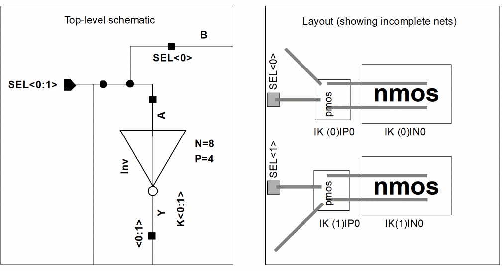

One-to-Many Mapping of Instance or Pin
One-to-many mapping lets you map a single instance or pin in the schematic to multiple instances or pins in the layout. You can implement one-to-many mapping in Layout XL designs by:
- One-to-Many Mapping with Iterated Instances and Bus Pins
- Using the multiplication factor (mfactor Property)
- Using the series-connected factor (sfactor Property)
- Defining a One-to-Many Device Correspondence
One-to-Many Mapping with Iterated Instances and Bus Pins
You can use iterated instances and bus pins to enable one-to-many mapping between pins and devices in the schematic and multiple instances of the pins and devices in the layout.
For example, the figure below shows
-
Bus pin
SEL<0:1>in the schematic mapped to bus pinsSEL<0>andSEL<1>in the layout. -
Iterated instance
K<0:1>mapped to instancesIK(0)|P0,IK(0)|N0,IK(1)|P0, andIK(1)|N0in the layout.

Related Topics
Return to top